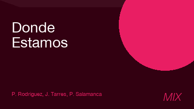
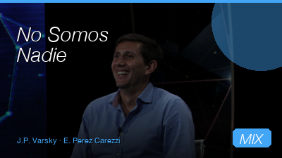
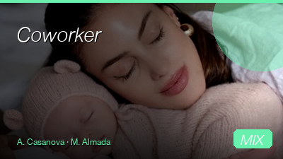
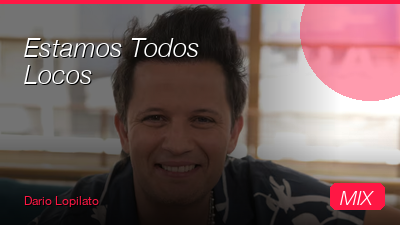
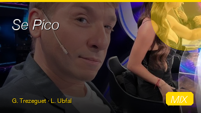
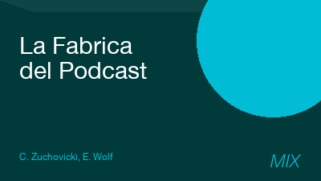
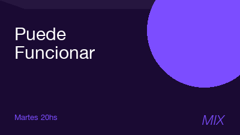
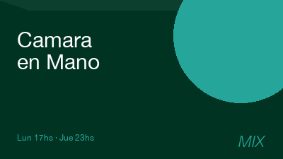
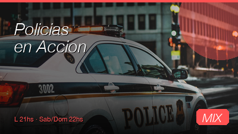

El nuevo canal de Kuarzo Entertainment llega con una grilla en vivo de lunes a viernes y la mejor programación del fin de semana. Las voces más escuchadas del periodismo, el deporte y el espectáculo argentino, ahora en TV abierta digital.
Un canal con audiencia en crecimiento, talento de primera línea y distribución en todas las pantallas — TV abierta, cable y streaming.
Grilla en vivo semana del 16 al 22 de Mayo 2026. Periodismo de mañana, actualidad de tarde y entretenimiento en prime time.









En TV abierta digital, cable y streaming. Disponible en todas las pantallas para que tu marca esté donde está el público.
PNTs, auspicios, integraciones, zócalos y banners. Hablemos del plan ideal para tu campaña en el nuevo canal de Kuarzo.
Hablemos de comercial →